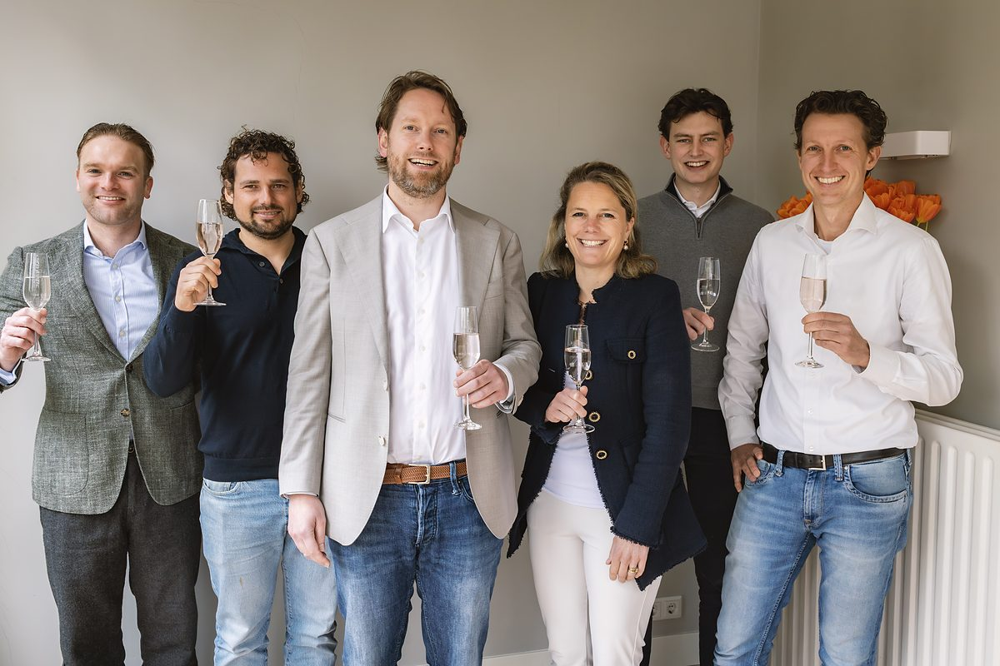
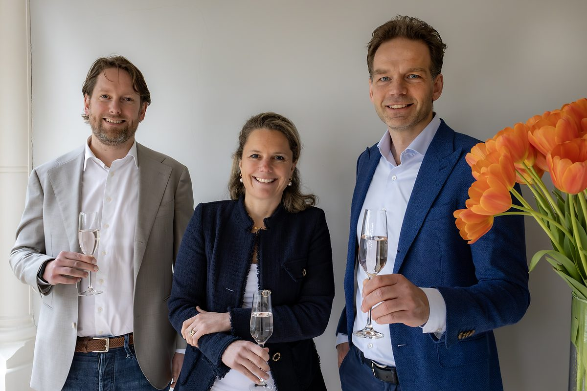

Over NLI Capital
Wij geloven in de kracht van de Nederlandse ondernemer
"Wij investeren niet alleen kapitaal — wij investeren onze tijd, ervaring en netwerk in elke ondernemer."

Wie zijn wij
NLI Capital is een onafhankelijk private equity fonds dat investeert in kansrijke mkb-ondernemingen in Nederland. Wij zijn in 2022 opgericht vanuit NL Investeert, een organisatie met meer dan tien jaar ervaring in het begeleiden van ondernemers.
Ons fonds, NLI Capital Fonds I, heeft in januari 2025 zijn final close bereikt op €50 miljoen. Met dit vermogen investeren wij in tien tot vijftien ondernemingen, waarbij wij een minderheids- of meerderheidsbelang nemen van 20% tot 60%, afhankelijk van de situatie.
Wij richten ons op drie situaties: management buy-outs, het uitkopen van een compagnon, en groeikapitaal voor organische of buy-and-build groei. Onze investeringshorizon is 3 tot 7 jaar.
Wij werken als een klein, betrokken team. Dat betekent korte lijnen, snelle beslissingen en oprechte betrokkenheid bij elke deelneming.
Onze aanpak →Onze werkwijze
Vier pijlers die onze manier van werken kenmerken
Partnerschap
Wij zijn geen passieve investeerder. Wij staan naast de ondernemer — betrokken, maar zonder op de stoel van de ondernemer te gaan zitten.
Sector expertise
Wij richten ons op sectoren waar wij diepgaande kennis en een sterk netwerk hebben, zodat wij echte waarde toevoegen.
Slagvaardigheid
Korte beslissingslijnen, heldere communicatie en snelle uitvoering. Wij nemen beslissingen als team en communiceren direct.
Langetermijndenken
Wij investeren voor de lange termijn. Geduldig kapitaal voor duurzame groei — geen snelle exits ten koste van het bedrijf.
Onderdeel van NL Investeert
NLI Capital opereert onder de paraplu van NL Investeert, een organisatie die al meer dan tien jaar Nederlandse ondernemers ondersteunt met kapitaal, kennis en netwerk. NL Investeert heeft tot op heden meer dan €1,8 miljard aan financieringen begeleid.
Via NL Investeert hebben wij toegang tot een breed ecosysteem van investeerders, adviseurs, banken en ondernemers. Dit netwerk zetten wij actief in ten behoeve van onze deelnemingen — voor dealflow, co-financiering en strategische vraagstukken.
Voor adviseurs en intermediairs biedt dit een directe lijn naar een besluitvaardig team met ruime ervaring in mkb-transacties. Wij werken graag samen met M&A-adviseurs, accountants en bedrijfsovername-adviseurs.

Maak kennis met ons team
Een ervaren team van investeerders en ondernemers klaar om u te ondersteunen.
Bekijk het team